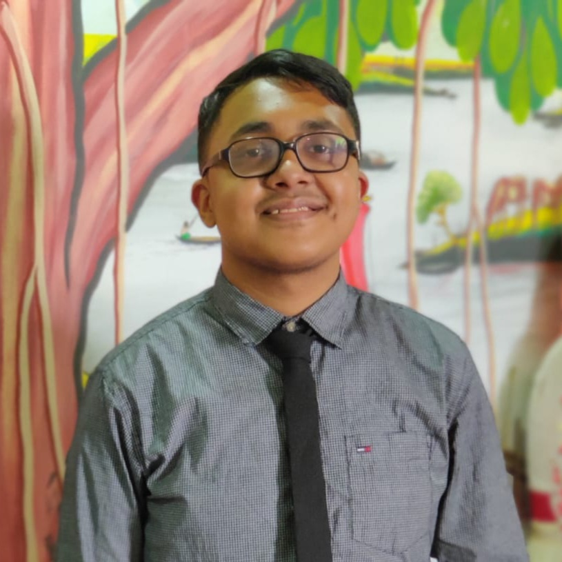

Faisal Bhuiyan

West Ukil Para, Azizul Hoque Road, Feni | Tel - 01790750458 | 1921298@iub.edu.bd
Profile
Self motivated with more than 2 years of tech-related content writing experience.
Fluent in various programming languages including C++ and Java.
Education
High School
- Bangladesh International School (Jeddah, Saudi Arabia) (2006-2018)
University
- BSc in Computer Science and Engineering (2019-Current)
Experience
- 2 Years of Work Experience As a Tech Content Writer
- Experience Developing Applications In Java
- Experience Coding And Solving Problems in C++